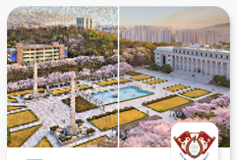
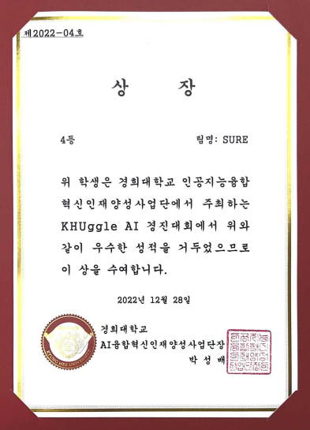

대회 설명
손상된 경희대학교의 사진을 고품질로 복원
📊 대회 주제
- 배경
- 대부분의 사진은 다양한 요소들로 인해 화질 저하가 발생
- 사진을 깨끗하게 복원하고자하는 요구 증가
- 손상된 교내의 사진을 딥러닝 기술로 복원하는 기술 개발
- 목표 : 이미지 복원을 위한 초해상화 모델 개발
🎯 데이터셋
- DIV2K: 초해상화 딥러닝 모델의 훈련을 위해 대표적으로 사용되는 고해상도 이미지 800장입니다.
- 대상 스케일 팩터(여기서는 x4)에 따라, 그만큼 줄어든 크기의 이미지를 LR(Low-Resolution), 원본은 HR(High-Resolution) 이미지로 부릅니다.
- 본 대회에서는 깨끗한 clean 버전 (khuggle_train_clean) 과 손상된 degraded 버전 (khuggle_train_degraded) 이 둘다 제공되니, 목적에 따라 데이터셋을 취사선택 할 수 있습니다.
- 본 대회에서는 모델 훈련을 위해 khuggle_train_clean과 khuggle_train_degraded만 사용 가능합니다.
- Set14: 초해상화 딥러닝 모델의 검증을 위해 대표적으로 사용되는 고해상도 이미지 14장입니다.
- LR과 HR의 기준은 DIV2K와 동일합니다.
- 검증용 데이터셋은 Set14이외에 Set5, Urban100, B100, Manga109등이 있으니, 검색 후 자유롭게 찾아 사용하셔도 됩니다.
💡 태스크
- 평가 : 초해상화 모델을 통해 복원된 이미지를 원본 이미지와 비교 (x4배로 초해상화)
- 평가 방식: PSNR (Peak Signal-to-Noise Ratio)
- 입력값: 저해상도 LR 이미지
- 출력값: 4배로 초해상화된 SR 이미지
- 정답값: 고해상도 (원본) HR 이미지
해결 방법
총 7개의 모델을 가중합 방식으로 앙상블 하는 방향으로 코드를 구성했으며 구체적인 모델의 내용은 아래와 같습니다.
- ESR_GAN(Pretrain weight + fintuning 1 epochs) #PSNR: 29.41
- Real_ESR_GAN(Only using pretrain weight) #PSNR: 29.9675
- Real_HAT_GAN(Only using pretrain weight) #PSNR: 30.15
- Swin_IR_Large(Only using pretrain weight) #PSNR: 29.95
- BSR_GAN(Only using pretrain weight) #PSNR: 29.90
- BSR_GAN(Pretrain weight + fintuning 40 epochs) #PSNR: 29.98
- MMSR_SRResNet(Only using pretrain weigh) #PSNR: 29.53
학습을 진행한 ESR_GAN과 BSR_GAN의 경우 아래와 같은 조건에서 학습했습니다.
ESR_GAN: - batchSize : 64- nEpochs : 1- lr : 1e-4 - Optimizer : Adam - Loss: MS-SSIM + L1 - scheduler: none - DA: none
BSR_GAN: - batchSize : 4 - nEpochs : 40 - lr : 1e-4 - Optimizer: RAdam - Loss: MS-SSIM + L1 - scheduler: cosine annealing LR - DA: none
해당 모델들이 inference해서 생성한 이미지들을 차례 대로 아래와 같은 가중치로 가중합했습니다.
weight = [0.2,0.2,0.2,0.2,0.2/3,0.2/3,0.2/3]
의미
첫 이미지 화질 개선 분야 도전, Super Resolution
GIT Link
파일 구성은 아래와 같습니다.
- 사용설명서: 구성한 코드의 전체 내용과 설명서가 담겨 있는 문서가 담긴 폴더입니다.
- code : 각 개별 모델의 코드와 앙상블 하는데 사용한 코드가 담긴 폴더입니다.
- ESRGAN.ipynb (모델)
- BSRGAN_epoch_40.ipynb (모델)
- REAL_HAT_GAN.inpynb (모델)
- MMSR_SRResNet.ipynb (모델)
- BSR_GAN_+realESRGAN+_SwinIR_large.ipynb (모델)
- Esemble.ipynb (앙상블)
- weight: 학습을 시킨 모델의 경우 모델이 학습한 후의 weight, pretrain model의 경우 다운 받은 weight가 담긴 폴더입니다. weight가 없는 경우, ipynb 내부에서 다운 받을 수 있습니다.
- inference image: 각 개별 모델이 inference한 이미지가 담긴 폴더입니다. 해당 이미지를 앙상블에 사용하였습니다.